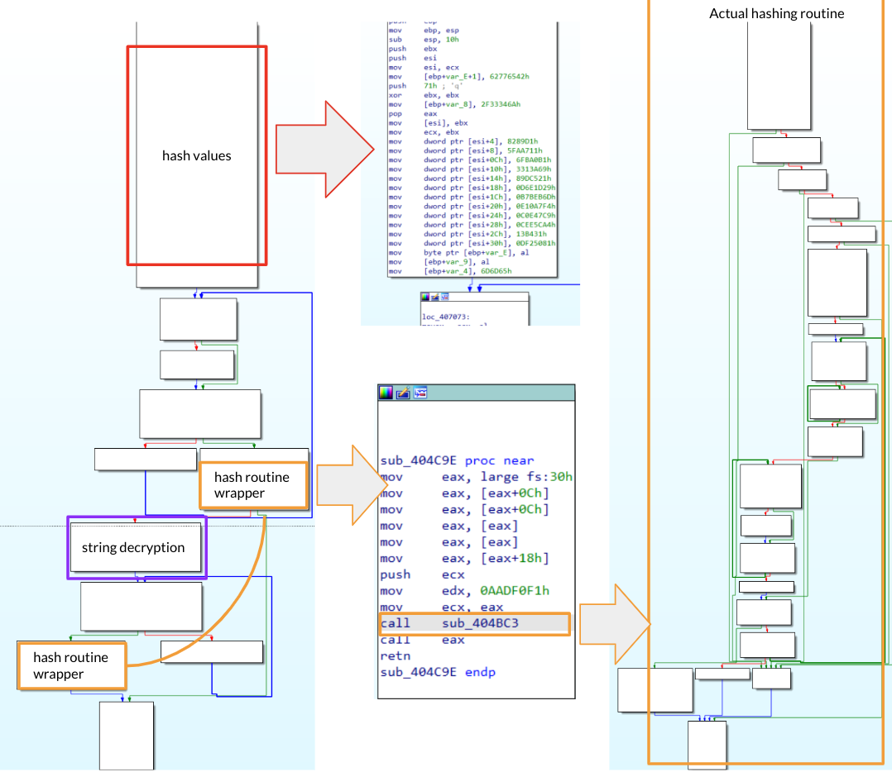
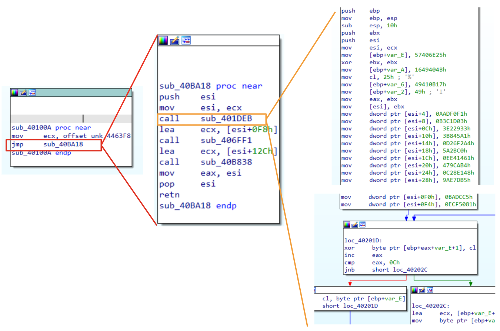
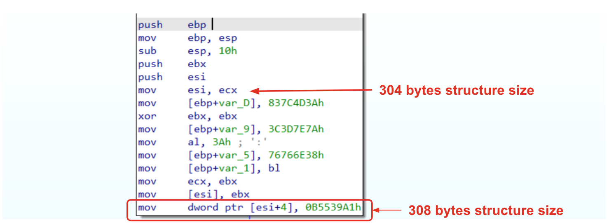
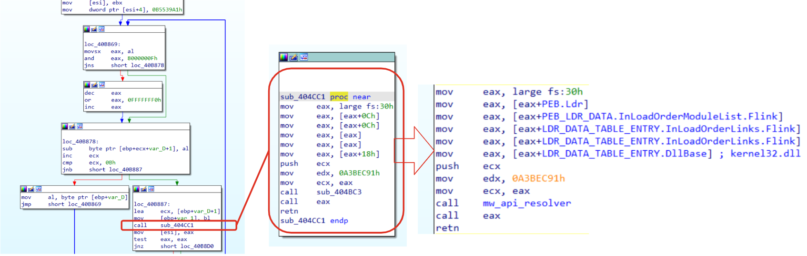
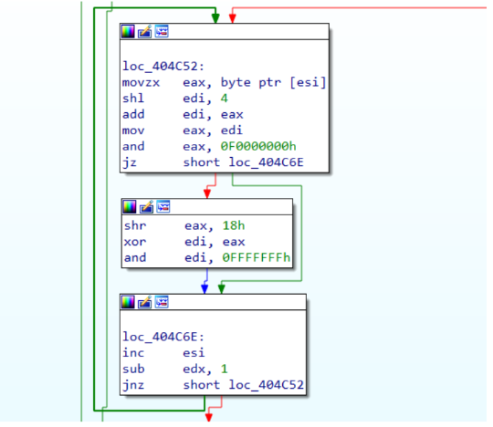
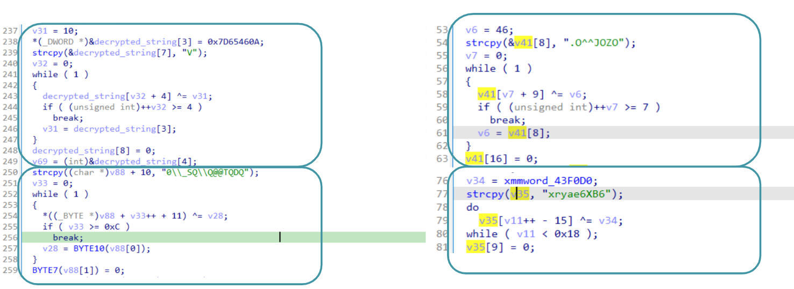
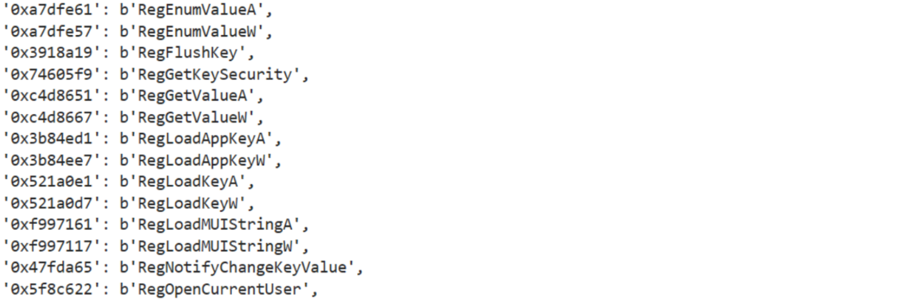

11 minutes
Emulating inline decryption for triaging C++ malware
What we need to know?
C and C++ binaries share several commonalities, however, some additional features and complexities introduced by C++ can make reverse engineering C++ binaries more challenging compared to C binaries. Some of the most important features are:
Name Mangling: C++ compilers often use name mangling to encode additional information about functions and classes into the symbol names in the binary. This can make it more challenging to understand the code’s structure and functionality by simply looking at symbol names.
Object-Oriented Features: C++ supports object-oriented programming (OOP) features such as classes, inheritance, polymorphism, and virtual functions. Reverse engineering C++ binaries may involve identifying and understanding these constructs, which may not exist in C binaries.
Templates: C++ templates allow for generic programming, where functions and classes can operate on different data types. Reverse engineering C++ templates can be complex due to the generation of multiple versions of the same function or class template with different types.
Another topic that is mandatory to understand when we approach binaries is related to the calling convention. Even if it’s determined by the operating system and the compiler ABI (Application Binary Interface) rather than the specific programming language being used, its one of the fundamental aspects that too many times is overlooked.
💡There are many other differences related to Runtime Type Information (RTTI), Constructor and Destructor Calls, Exception Handling and Compiler-Specific Features. Those topics aren’t less important than the others mentioned above, however, explaining a basic triage does not involve those topics and giving an explanation for all of them could just lose the focus. Moreover, If you don’t feel comfortable with calling conventions, refer to exceptional material on OALabs.
Why GlorySprout?
I know, probably this name for most of you does not mean anything because it does not represent one the most prominent threats on Cyberspace, however, didactically speaking, it has a lot of characteristics that make it a great fit. First of all it’s a recent malware and because of this, it shares most of the capabilities employed by more famous ones such as: obfuscation, api hashing, inline decryption etc.. Those characteristics are quite challenging to deal with, especially if we go against them to build an automation script that is going to replicate our work on multiple samples.
Another interesting characteristic of this malware is that it represents a fork of another malware called Taurus Stealer as reported by RussianPanda in her article. So, why is it important? Taurus Stealers have been dissected and a detailed report is available here. From a learning stand point it represents a plus, since if you are stuck somewhere in the code, you have a way out trying to match this GlorySprout capabilities with Taurus.
Let’s start our triage.
Binary Overview
Opening up the binary in IDA and scrolling a little bit from the main functions it should be clear that this binary is going to use some api hashing for retrieving DLLs, inline decryption and C++ structures to store some interesting value. To sum up, this binary is going to start resolving structures and APIs, perform inline decryption to start checking Windows information and installed softwares. However, those actions are not intended to be taken without caution. In fact, each time a string is decrypted, its memory region is then immediately zeroed after use. It means that a “quick and dirty” approach using dynamic analysis to inspect memory sections won’t give you insights about strings and/or targets.

Figure 1: Binary Overview
Identifying and Creating Structures
Identifying and creating structures is one of the most important tasks when we deal with C++ malware. Structures are mostly reused through all code, because of that, having a good understanding of structures is mandatory for an accurate analysis. In fact, applying structures properly will make the whole reversing process way more easier.
Now you may be wondering, how do we recognise a structure? In order to recognise structures it’s important to observe how a function is called and how input parameters are actually used.
In order to explain it properly, let’s take an example from GlorySprout.

Figure 2: Passing structure parameter
Starting from left to right, we see some functions callings that could help us to understand that we are dealing with a structure. Moreover, its also clear in this case, how big the structures is.
💡As said before, calling convention is important to understand how parameters are passed to a function. In this case, we are dealing with is a clear example of thiscall.
Let’s have a look at the function layout. Even if we are seeing that ecx is going to be used as a parameter for three functions, it is actually used each time with a different offset (this is a good indication that we are dealing with a structure). Moreover, if we have a look at the first call (sub_401DEB), this function seems to fill the first 0xF4 (244 in decimal) bytes pointed by ecx with some values. Once the function ends, there is the instruction lea ecx, [esi+0F8h] and another function call. This pattern is used a couple of times and confirms our hypothesis that each function is in charge to fill some offset of the structure.
From the knowledge we have got so far and looking at the code, we could also infer the structure passed to the third call (sub_406FF1) and the whole size of the structure.
sub_406FF1_bytes_to_fill = 0xF8 - 0x12C = 0x34 (52 bytes)
structure_size = 0xF8 + 0x34 = 0x12C (300 bytes) + 4 bytes realted to the size of the last value.
However, even if we resolved the size structures and understood where it is used, there is still a point missing. Where does this structure come from? To answer this question, it’s important to take a step back. Looking at the functionsub_40100A we see the instruction [mov ecx , offset unk_4463F8]. If you explore that variable you will see that it is stored at 0x004463F8 and the next variable is stored at 0x0044652F. If we do a subtraction through these two addresses, we have 312 bytes. There are two important things to highlight here. First of all, we are dealing with a global structure that is going to be used multiple times in different code sections (because of that, naming structure fields will be our first task), however, according to the size calculated, it seems that we are missing a few bytes. This could be a good indication that additional bytes will be used later on in the code to store an additional value. In fact, this insight is confirmed if we analyze the last function (sub_40B838). Opening up the function and skipping the prolog instructions, we could immediately see that the structure is moved in esi, and then a dword is moved to esi+4. It means that esi is adding 4 bytes to the structure that means that now the structure size is 308 bytes.

Figure 3: Understanding structure size
Now that we have a better understanding of the structure’s size, it’s time to understand its values. In order to figure out what hex values represent, we need to go a little bit deeper exploring the function. Going over a decryption routine, there is a call towards sub_404CC1. If we follow this call, we should immediately recognize a familiar structure (if not, have a look at this article). We are dealing with a routine that is going to resolve some APIs through the hex value passed to the function.

Figure 4: PEB and LDR data to collect loaded DLLs
Well, so far we have all the elements required to solve our puzzle! The structure we are dealing with is 312 bytes long and contains hex values related to APIs. Doing an educated guess, these values will be used and resolved on the fly, when a specific API function is required (structure file will be shared in the Reference section).
💡As part of the triage process, structures are usually the very first block of the puzzle to solve. In this case, we have seen a global structure that is stored within the data section. Exploring the data section a little bit deeper, you will find that structures from this sample are stored one after another. This could be a very good starting point to resolve structures values and hashes that could highlight the binary capabilities.
Resolving API Hash
If we recall Figure 3, we see multiple assignment instructions related to esi that contain our structure. Then in Figure 4 we discovered that API hashing routine is applied to some hex to get a reference to the corresponding function. The routine itself is quite easy and standard, at least in terms of retrieving the function name from the DLL (a detailed analysis has been done here).

Figure 5: API hashing routine
The Figure above, represents the routine applied to each function name in order to find a match with the hash passed as input. It should be easy to spot that esi contains (on each iteration) a string character that will be manipulated to produce the corresponding hash.
💡The routine itself does not require a lot of explanation and it’s pretty easy to reconstruct. In order to avoid any spoilers, if a reader wants to take this exercise, my code will be shared within the Reference section. It’s worth mentioning that this function could be implemented also through emulation, even if code preparation is a bit annoying compared to the function complexity, it could be a good exercise too.
Inline Decryption
So far we have done good work reconstructing structure layout and resolving API. That information gave us few insights about malware capabilities and in general, what could be the actions taken by this malware to perform its tasks. Unfortunately, we have just scratched the surface. In fact we are still missing information about malware configuration, such as: targets, C2, anti-debug, etc.. In fact, most of the interesting strings are actually decrypted with an inline routine.
💡For anyone of you that actually tried to analyze this malware, you should already familiar with inline decryption routine, since that it spread all around the code.
Inline decryption is a quite interesting technique that really slows down malware analysis because it requires decryption of multiple strings, usually with slight differences, on the fly. Those routines are all over the code and most of the malware actions involve their usage. An example has been already observed in Figure 4 and 5. However, in order to understand what we are talking about, The figure below show some routines related to this technique:

Figure 6: Inline Decryption
As you can see, all those routines are quite different, involving each time a different operand and sometimes, the whole string is built on multiple parts of the code. According to the information collected so far, about inline decryption, it should be clear that creating a script for each routine will take forever. Does it end our triage? Likely, we still have our secret weapon called emulation.
The idea to solve this challenge is quite simple and effective, but it requires a little bit of experience: Collect all strings and their decryption routine in order to properly emulate each snippet of code.
Automation
Automating all the inline encryption and the hashing routine it’s not an easy task. First of all, we need to apply the evergreen approach of “dividi et impera”.In this way, the hashing routine have been partially solved using the template from a previous post. In this way, it’s just a matter of rewriting the function and we are going to have all the corresponding matches.

Figure 7: advapi32.dll resolved hashes
However, what is really interesting in this sample is related to the string decryption. The idea is quite simple but very effective. First of all, in order to emulate this code, we need to identify some structures that we could use as anchor that is going to indicate that the decryption routine ended. Then we need to jump back to the very first instruction that starts creating the stack string. Well, it is easier said than done, because jumping back in the middle of an instruction and then going forward to the anchor value would lead us to an unpredictable result. However, if we jump back, far enough from the stack string creation, we could traverse the instructions upside down, starting from the anchor value back to the stack string. Doing so won’t lead to any issue, since all instructions are actually correct.
Figure 8: Resolved strings
Conclusion
Through this post we have started to scratch the surface of C++ binaries, understanding calling conventions and highlighting some features of those binaries (e.g, classes and calling conventions). However, going further would have been confusing, providing too much details on information that wouldn’t have an immediate practical counterpart. Nevertheless, what was quite interesting regardless of the api hashing routine emulation, was the inline decryption routine, introducing the idea of anchors and solving the issue of jumping back from an instruction.
References
Glory Sprout string decryptor:
Glory Sprout Hash resolver:
GlorySprout sample:
Insight from GlorySprout and Taurus Stelaer:
2204 Words
2024-05-16 02:00